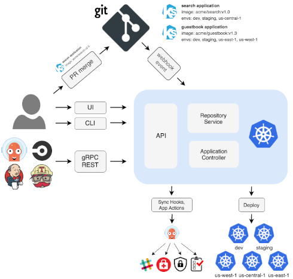

Revue des lecteurs sur openfeedback https://bit.ly/3bWs4Qk
| Louis Tournayre @ Zenika Lyon |
Pour que ce soit le plus efficient, il faut que les déploiement soient un non évenements.
Fiable, Rapides, Automatisés, 🎁 ...
Il faut revoir le processus de mise en production 😰
Chercher des idées :
Vous rencontrez vos amis Gandalf et Gimli au ☕. Ils vous proposent la solution suivante :
https://argoproj.github.io/cdArgo CD is a declarative, GitOps continuous delivery tool for Kubernetes.

├── base │ ├── deployment.yml │ ├── ingress.yml │ ├── kustomization.yml │ └── svc.yml └── overlays ├── moria │ ├── patch.yml │ └── kustomization.yml ├── erebor │ ├── ...
The package manager for Kubernetes(https://helm.sh/)
L'enfer est pavé de bonnes intentions(Saint-Bernard)
Helm, c'est à la fois un système de :
├── charts ├── Chart.yaml ├── templates │ ├── deployment.yaml │ ├── _helpers.tpl │ ├── hpa.yaml │ ├── ingress.yaml │ ├── NOTES.txt │ ├── serviceaccount.yaml │ ├── service.yaml │ └── tests │ └── test-connection.yaml └── values.yaml
---
apiVersion: v1
data:
password: RW5jb2RlciBuJ2VzdCBwYXMgY2hpZmZyZXI=
kind: Secret
metadata:
name: it-s-a-joke
On peut utiliser Vault depuis notre l'endroit qui déploie grace à :
Ou encore depuis le cluster où les secrets sont utilisés via :
Même si c'est la meilleure solution, vous n'avez pas encore le niveau pour cette epic.
Ce sera l'objet d'une autre aventure dont vous serez le héros...
https://bit.ly/3HqdUFC